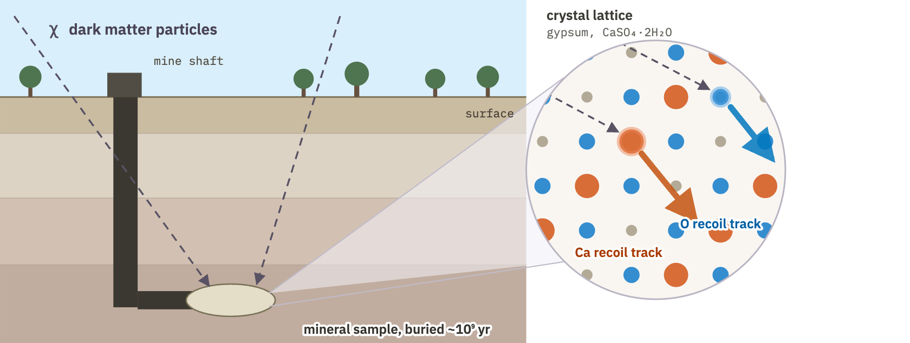

The current state of the search for beyond standard model (BSM) physics is one of experimental drought and theoretical abundance. No new elementary particle has been confirmed since the Higgs in 2012, and many dedicated experiments across high-energy physics (including the Large Hadron Collider) have found little significant deviation from the Standard Model across thousands of observables. Despite this, over the same period, the number of BSM descriptions has grown significantly1.
This is to say, there is an overabundance of ways to describe reality, but not enough experimental probes that can tell these scenarios apart. This state of physics thus motivates asking (and potentially automating a search for the answer of) a different question,
What is the best description of reality?
What are unexplored observables that distinguish these descriptions?
We introduce hAIthem (Hidden-sector AI for Testable Hypothesis EnuMeration), a framework designed to search the space of experimental signatures beyond the literature, backronymed after a pioneer of the experimental method, Ibn Al-Haytham (965–1040 CE), whose work cemented controlled experiment as the arbiter of competing theory2,3. hAIthem turns the task of signature generation into a competition between candidate signatures' ability and practicality for separating two or more descriptions of reality that satisfy current experimental constraints.
Loading…
To do so, hAIthem is first composed of what we call a Large Lagrangian Model (LLaM), an autoregressive transformer pretrained from scratch on over 1 Billion Output Tokens from over 10,000 specially tokenized Lagrangians, and fine-tuned in a live environment with reinforcement learning (RL). The LLaM is trained to play a battleship-style game (with limited turns and limited probes per turn) over the parameter space of a theory. Its goal is to find regions in that parameter space that can be the correct description of reality (that is, no experiment we consider rules them out).
For a given Lagrangian, this is similar in structure to AlphaGo and AlphaZero4,5,6 and our approach borrows concepts from each of them. We have a space too large for systematic search, made tractable by an RL agent trained with a physically grounded “game” engine. We find the most effective method to build such an agent is to adopt the paradigm that defines modern large language models and AlphaGo. That is, large-scale pretraining on an offline dataset, followed by Reinforcement Learning fine-tuning in a live environment.
With a set of non-excluded regions found by the LLaM, hAIthem constructs a decision tree that generates the competition between candidate signatures. The decision tree formulation coupled to the LLaM is built to encourage the search for signatures beyond the literature. Each node in the tree is an observable with a binary outcome that splits LLaM-found regions (for example, do we expect an observation at experiment X or not), and the leaves of the tree correspond to parameter-space regions that share an experimental signature given by the set of nodes that comprise the path to the leaf. We first construct the tree with analytically computed observables, depth-ordering observables by their ability to split the set of regions we consider. In this construction, degenerate leaves are leaves with more than one parameter-space region sharing every experimental signature we compute analytically. These leaves are then handed to a set of LLM agents that attempt to propose realistic observables that continue the splitting.
The tree construction turns breaking these degeneracies into a concrete, non-open-ended task given specific Lagrangians and specific parameter values (masses, couplings, etc.). The LLM-agents must compete to give realistic signatures along with sharp binary verdicts as to how degenerate regions differ in their proposal. Additionally, they are forced to think beyond observables already analytically computed earlier in the tree (reuse is explicitly prohibited) and are allowed null answers (no signature found). We further find that the decision tree formulation leads to a natural grouping of Lagrangian-viable regions into experimentally distinguishable classes.
The Large Lagrangian Model

We let the search for regions in high-dimensional parameter space not excluded by experiment be akin to a single-player game of battleship. The board is defined by a Lagrangian, some set of experimental cuts, the parameter space ranges, and a budget of turns the agent has to do the search, with a fixed number of “shots” per turn. The ships the LLaM looks for are connected regions that are both viable, in that they are not ruled out, and testable, in that some experiment is predicted to probe them. Their number, shape, and location are unknown, and the agent is rewarded in training for finding them efficiently.
The Large Lagrangian Model is trained to learn how to play this game and is an autoregressive (in parameter space dimension) transformer whose tokens are Lagrangians and their phenomenology. Each episode, it is given one Lagrangian and a budget of between 5 and 50 turns. On every turn it proposes four distributions over that theory's parameter space, and the shots for that turn are drawn from them. The outcome of the current turn is given to the LLaM for it to use for the next turn(s).
The model takes a few inputs: the tokenized Lagrangian, the viability configuration (which experimental cuts are active), what ranges the agent can search in, and how many turns it has left. It also takes an encoding of the search so far, where 64 learned tokens cross-attend over every probe shot in the game. This lets each proposal depend on what the previous turns revealed.
Each of the four proposed distributions is a Beta distribution per parameter. Independent Betas cannot express correlations between parameters, so we sample them autoregressively, with masses first, then couplings, then kinetic mixing, with each drawn value fed back causally for the next parameter.
Training in a live environment alone proved intractable as the model grew. We therefore pretrained offline on roughly a billion output tokens drawn from 10,000 distinct Lagrangians. The pretraining task is a perturbation of the real RL game, and we fine-tune with Proximal Policy Optimization (PPO) in a live environment. We build and train two sizes of the LLaM, one 4.4M (small) and one 42.5M parameters (medium).
Benchmarking the Large Lagrangian Model
Below are benchmarks of the LLaM against a Differential Evolution (DE) baseline. The LLaM finds more viable points than DE, especially with a small number of probes. The LLaM also does well with increasing Lagrangian parameter dimension, while DE collapses, as is expected with the curse of dimensionality.


Building the Decision Tree
We take all viable points the LLaM found for a Lagrangian, and grow a tree with them, where each node is one observable, and each leaf defines a distinct combination of signatures and contains all viable points that share the same signatures. After growing the tree, we find leaves holding more than one region. We consider these degenerate, in that nothing we currently compute tells the theories in the leaf apart.
Breaking these degeneracies is the job of LLM-agents, which can reason at scale. We hand these leaves to an LLM agent and ask it to attempt to split the degeneracy, one LLM-agent call per leaf. The agent is asked to extend the tree with new binary splits until either all degeneracies have been split, a max LLM-depth is reached (we use a max LLM-depth of 4), or a proposed node is judged to be practically impossible to split. For adding binary splits, the agent has three choices for types of splits:
- A Literature Split: A published result for an observable whose current limits split the degenerate regions. For this kind of split, the LLM must cite the paper that is used, its reasoning for why this works, and a status “Splits!” or “No Split” that reports if the split was successful.
- A Literature Projection: An experiment or limit that is planned or described in the literature whose projected sensitivity splits the regions. For this split, the LLM must cite the most relevant papers for this projection, must report its reasoning for this split, an approximate sensitivity improvement factor relative to the closest experiment already run, and must report a qualitative judgment on the feasibility of this split as a choice from five categories: Reanalysis, Possible, Next Generation, Speculative, and Impossible.
- A Novel Observable: An experiment or limit that has not been proposed in the literature that may be capable of splitting the regions. The LLM agent must report its reasoning for this split, the paper that is closest to its idea, and must report a qualitative judgment on the feasibility of this split as a choice from four categories: Possible, New Experiment, Speculative, and Impossible.
We enforce ordering rules for the proposal of these node choices. The first attempted split must be of type Literature Split to ensure the LLM searches what has already been done, and only after finding “No Split” is it permitted to propose other types. The agent then searches for Literature Projection nodes, and moves on to Novel Observable only if none are found. We also allow the LLM to propose alternatives. If a Literature Projection is qualitatively judged to be Next Generation or worse, the agent can propose a Novel Observable alternative with the same or better feasibility qualitative judgment.
We further use ensembling, creating the full tree Nrepeat = 5 times and passing all trees through an aggregation LLM-agent pass, in which the agent chooses the best combination of observables from all runs. For all runs, tool use is enabled and set to web search and arXiv retrieval, which the agent must use to verify every reference it cites.
The Large Lagrangian Model finds what theories to consider, and the LLM-agent does the phenomenology there, both working at scale.
What did we find?

As an initial test, we use our LLaM to scan through all single-dark-multiplet models our space allows and build our decision tree over the (small!) set. We find that degenerate leaves lead to the proposal of unapplied combinations of known observables.
One motivating example is a “Novel Alternative” shown in two nodes in the global tree, titled “Paleo-detector Ca/O recoil-spectrum ratio”. In both cases, the agent was in need of a precise measurement of the dark matter mass mχ. The agent recognizes that Drees and Shan's7 description of the expected maximum kinetic energy a dark matter particle deposits in a direct detection detector is a good probe for mχ and is given by,
where vesc is the galactic escape velocity of the dark matter particles, f(mχ) is some known function of the dark matter mass. Thus, a statistically robust measurement of Emax may be a precise probe of the dark matter mass if vesc is known.
The challenge is that the exposure needed (the amount of time a detector is collecting data) for measuring such an observable is very large, requiring many dark matter detections near vesc.
As a solution, the agent reaches for paleo detectors, minerals found deep underground, protected from cosmic rays and high temperatures for billions of years. Disturbances of the crystal lattice of these detectors contain permanent records of potential dark matter interactions8,9,10,11,12.
However, by the nature of their long exposure taking place throughout our galaxy's history, paleo detectors introduce much more uncertainty in the galactic escape velocity v2esc. As a solution, the agent proposes the use of the ratio of two direct detection targets,
which removes v2esc dependency entirely.
It further reasons that identifying a single mineral containing two sufficiently sensitive target nuclei would be ideal for controlling error. For example, neutrons from radioactive decays of surrounding elements. It identifies calcium and oxygen in gypsum as such a pair, inspired by recent work13 (though they do not consider this observable).
Both paleo detectors and the ratio of observables have been proposed before, but the combination for this context appears to be unexplored. The proposal requires an in-depth analysis of its realism, but its existence motivates hAIthem.
Next Steps
This work opens the door to large-scale searches for unexplored observables across different classes of dark matter and broader BSM Lagrangians. Since combinatorics grows quickly, such scans would require a large quantity of compute and potentially intelligent Lagrangian sampling strategies. The payoff, however, may be substantial. Such searches may reveal the value of different future and proposed observables/experiments in distinguishing between diverse dark matter and BSM models, and may help the community make better-informed scientific investments.
References
- G. Bertone and T. M. P. Tait, A new era in the search for dark matter, Nature 562 (2018) 51–56. arXiv:1810.01668
- Ibn al-Haytham, The Optics of Ibn al-Haytham, Books I–III: On Direct Vision, translated with introduction and commentary by A. I. Sabra, 2 vols., Studies of the Warburg Institute Vol. 40, Warburg Institute, University of London, London (1989). ISBN 0-85481-072-2.
- J. Al-Khalili, In retrospect: Book of Optics, Nature 518 (2015) 164–165. doi:10.1038/518164a
- D. Silver et al., Mastering the game of Go with deep neural networks and tree search, Nature 529 (2016) 484–489. doi:10.1038/nature16961
- D. Silver et al., Mastering the game of Go without human knowledge, Nature 550 (2017) 354–359. doi:10.1038/nature24270
- D. Silver et al., A general reinforcement learning algorithm that masters chess, shogi, and Go through self-play, Science 362 (2018) 1140–1144. doi:10.1126/science.aar6404
- M. Drees and C.-L. Shan, Model-Independent Determination of the WIMP Mass from Direct Dark Matter Detection Data, JCAP 06 (2008) 012. arXiv:0803.4477
- S. Baum, A. K. Drukier, K. Freese, M. Górski and P. Stengel, Searching for Dark Matter with Paleo-Detectors, Phys. Lett. B 803 (2020) 135325. arXiv:1806.05991
- S. Baum et al., Mineral detection of neutrinos and dark matter. A whitepaper, Phys. Dark Univ. 41 (2023) 101245. arXiv:2301.07118
- S. Baum, T. D. P. Edwards, K. Freese and P. Stengel, New Projections for Dark Matter Searches with Paleo-Detectors, Instruments 5 (2021) 21. arXiv:2106.06559
- T. D. P. Edwards, B. J. Kavanagh, C. Weniger, S. Baum, A. K. Drukier, K. Freese, M. Górski and P. Stengel, Digging for dark matter: Spectral analysis and discovery potential of paleo-detectors, Phys. Rev. D 99 (2019) 043541. arXiv:1811.10549
- A. K. Drukier, S. Baum, K. Freese, M. Górski and P. Stengel, Paleo-detectors: Searching for Dark Matter with Ancient Minerals, Phys. Rev. D 99 (2019) 043014. arXiv:1811.06844
- D. P. Theodosopoulos, K. Freese, C. Kelso and P. Stengel, Reconstructing Dark Matter Mass and Discriminating Standard and Non-Standard WIMP-Nucleus Interactions with Paleo-Detectors, (2026). arXiv:2608.10105